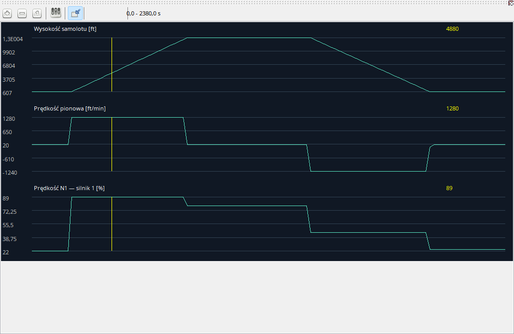

Najpierw wybierz wielkoœci odpowiadaj¹ce na pytanie: IAS, V/S i pochylenie do analizy przyziemienia albo N1/EGT/FF do obserwacji zmiany mocy. Nie trzeba pokazywaæ wszystkich parametrów naraz. Kolejnoœæ wykresów ustala okno konfiguracji. Skale i jednostki nale¿¹ do prezentacji; plik zachowuje pomiary Ÿród³owe.
Przy zatrzymanym odtwarzaniu ruch myszy nad wykresem mo¿e zmieniaæ wspólny kursor. Podczas odtwarzania ten mechanizm jest wy³¹czony, aby przypadkowy ruch nie cofa³ czasu. Zatrzymaj odtwarzanie przed szczegó³owym badaniem próbek. Luki danych pozostaj¹ lukami, nie lini¹ do zera.
Wykresy pokazuj¹ parametry w czasie, wspólnie z reszt¹ obszaru roboczego.
| Opcja / czynnoœæ | Dzia³anie i ograniczenia |
|---|---|
| Wybór | Konfiguracja ustala parametry i ich kolejnoœæ. Wyszukuj na liœcie dostêpnych; lista wyœwietlanych okreœla sekwencjê. |
| Zoom i przesuwanie | Zoom zmienia zakres czasu, przesuwanie pozycjê w nim, Pe³ny widok przywraca ca³oœæ. |
| Kursor | Hover przewija na pauzie. W trakcie odtwarzania jest wy³¹czony, aby przypadkowy ruch myszy nie przerywa³ czasu. |
| Jednostki i enumy | Podpis zawiera jednostkê prezentacji. Sprawdzone mapowania pokazuj¹ etykiety kokpitu, nieznane wartoœci pozostaj¹ liczbami. Nie zmienia to zapisu. |
| Luki | Brak linii/wartoœci mo¿e oznaczaæ niedostêpny lub niezapisany parametr, nie zmierzone zero. |
